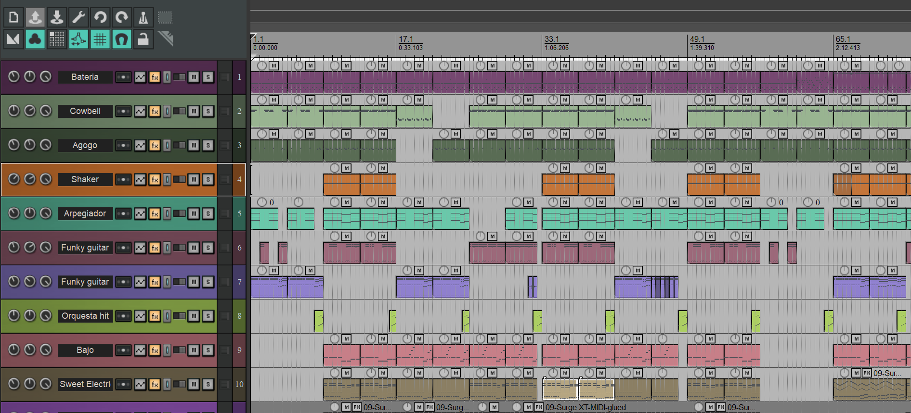

[ AUDIO // MASTER WAV ]
TRACK 01
Asi sea Desmo
Sesión de composición instrumental y balance de mezcla en estudio.
"Seis años de exploración en estación de trabajo digital: del ruteo de canales y la microfonía a la creación de texturas sonoras e identidad musical."

Mi flujo principal de trabajo está centralizado en REAPER, aprovechando su capacidad de ruteo modular, procesamiento multipista no destructivo y estabilidad para captura de señal, sesiones en vivo y mezcla en estudio.
Desarrollo proyectos que abarcan composición instrumental, edición vocal, ecualización correctiva, compresión por buses y diseño de ambientes sonoros para plataformas digitales y proyectos culturales.
Pistas instrumentales y sesiones de prueba exportadas en formato de alta fidelidad:
Sesión de composición instrumental y balance de mezcla en estudio.
Versión instrumental con enfoque en texturas dinámicas, paneo y diseño rítmico.